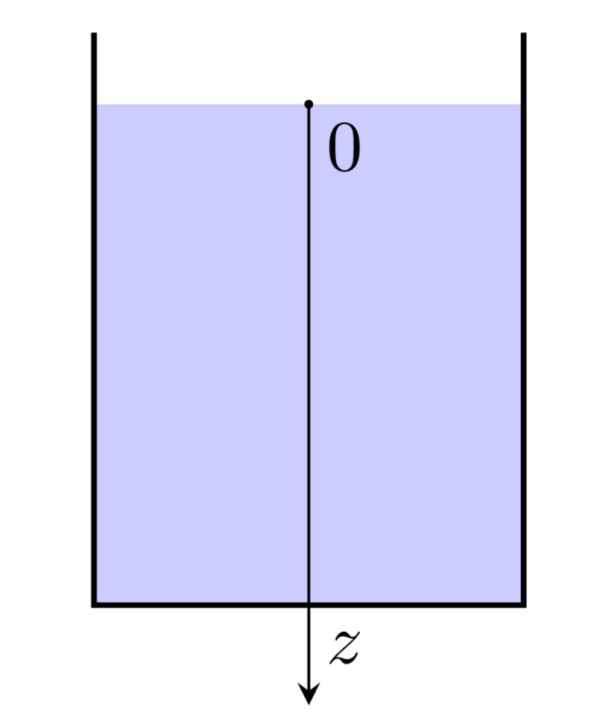
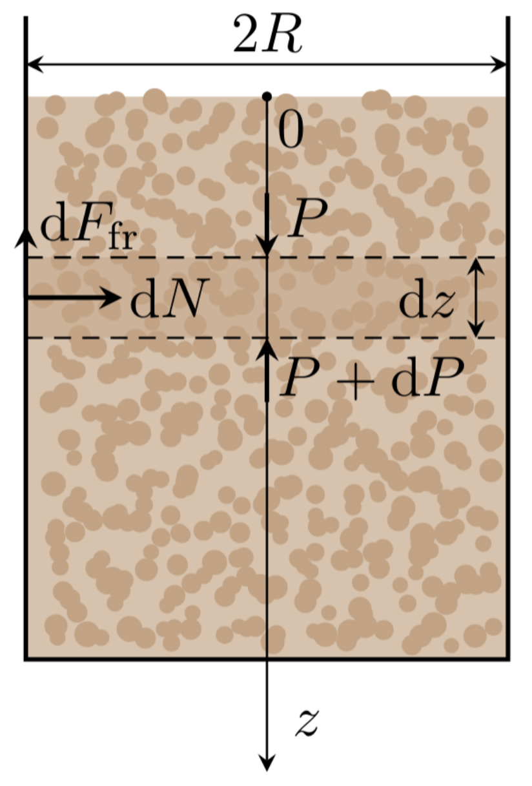
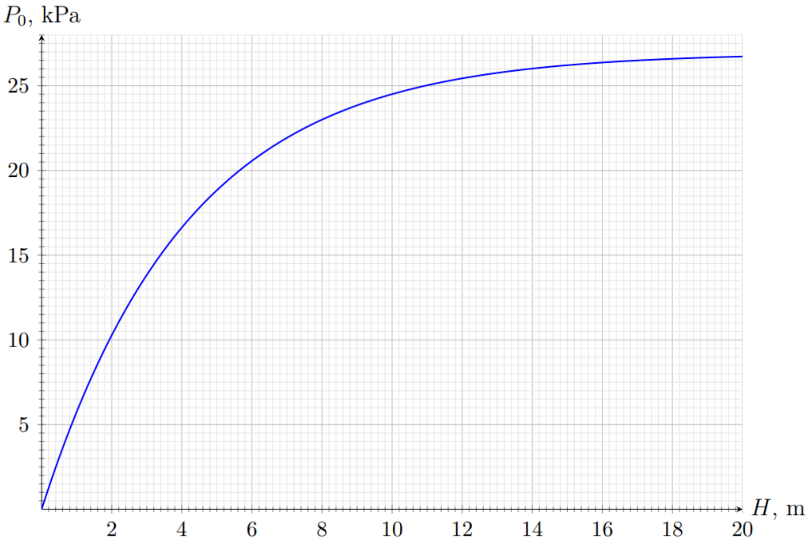
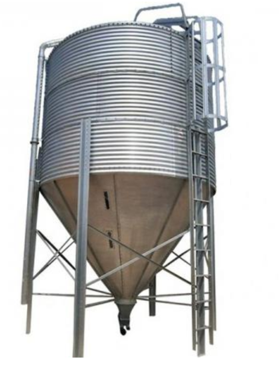
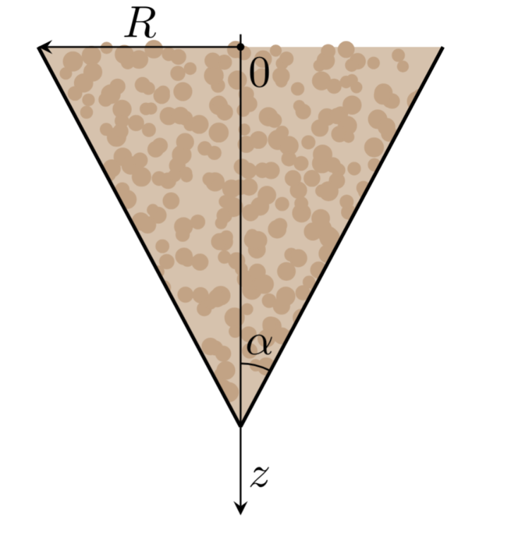
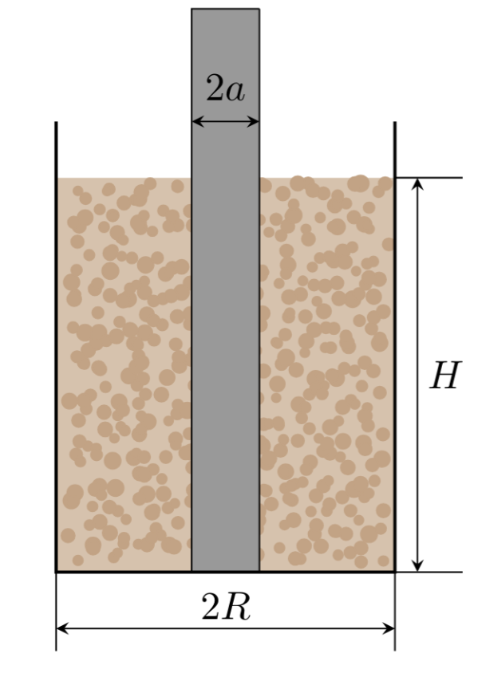
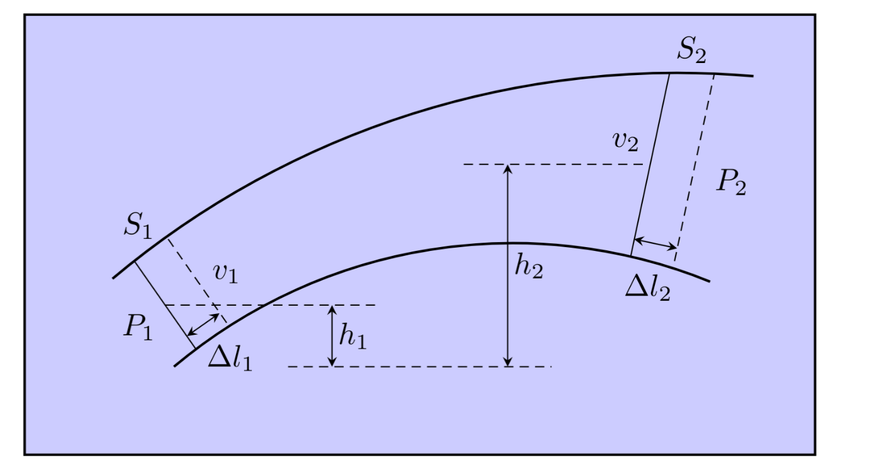
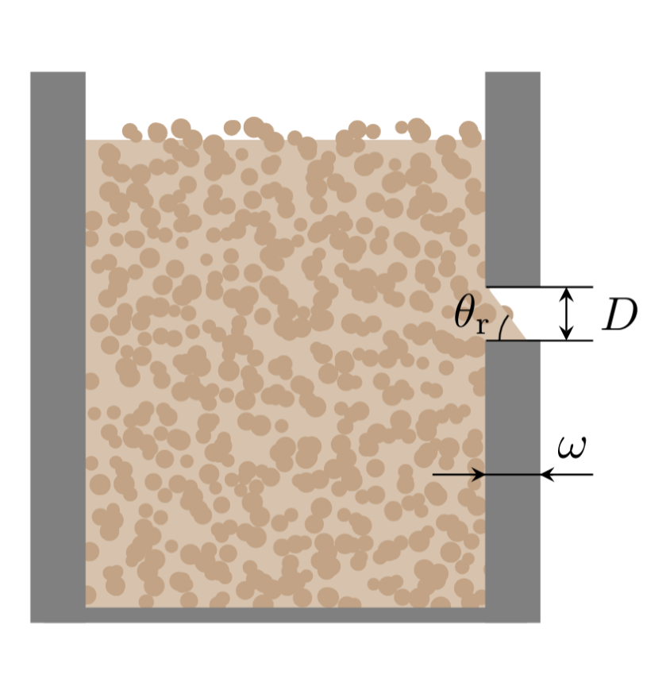
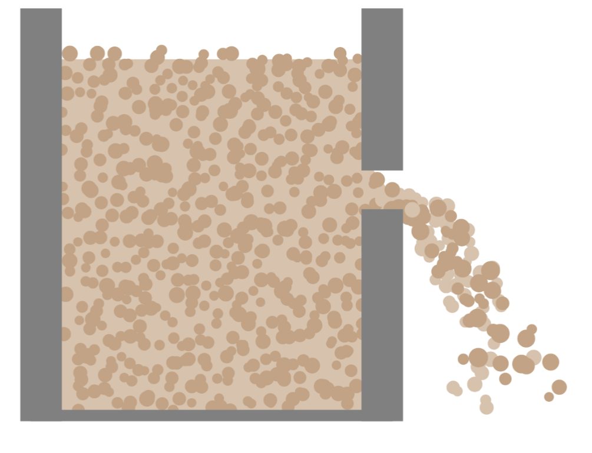

얀센 효과는 분립체(granular material)의 특징적인 성질이다. 알갱이들을 용기에 부으면, 입자들 사이의 접촉망이 형성되어 힘 사슬(force chains, 그림 참조)을 이루며, 이것이 알갱이 기둥의 응력을 옆벽 쪽으로 재분배한다.
그림 1: 힘 사슬(force chains)
분립체가 힘 사슬을 통해 응력 분포를 스스로 조직화하는 이 능력은, 분립체를 일반적인 액체나 고체와 구별짓는 특징이며, 이로 인해 과학과 공학의 여러 분야에서 그 연구가 중요하다. 특히 다량의 원자재가 보통 사일로(silo, 분립체 저장 시설)에 알갱이 형태로 저장되는 산업 분야에서 이는 매우 중요하다.
이 문제는 다양한 모양의 용기 속 구형 알갱이의 거동을 살펴봄으로써 이 효과를 탐구한다.
문제 전체에서 대기압의 기여는 무시한다. 모든 압력은 대기압에 대한 계기 압력(gauge pressure)을 가리킨다.
수직 벽과 바닥 넓이 $S$(그림 참조)를 가진 원통형 용기가 총 질량 $m$의 물로 가득 차 있다. 물의 밀도는 $\rho$이다.

그림 2: 물이 담긴 원통형 용기
A.1
용기 바닥에서의 압력 $p_1$을 구하라. 답을 $m$, $g$, $S$로 나타내라.
0.2pt
A.2
용기 벽에 작용하는 압력 $p(z)$를 깊이 $z$의 함수로 구하라. 답을 $\rho$, $g$, $z$로 나타내라.
0.3pt
Part B. 수직 벽 원통형 용기에서의 얀센 효과 (2.9점)
이 부분에서는 알갱이가 수직 벽 원통형 용기의 바닥에 가하는 압력이 알갱이의 질량에 어떻게 의존하는지 살펴본다.
문제의 B, C, D 부분에서는 다음 모형을 따른다:
$\rho$는 물질의 겉보기 밀도(bulk density, 용기의 단위 부피당 알갱이의 평균 질량)이다.
실험 전에 용기를 흔들어 알갱이가 완전히 무작위로 배열되도록 한다. 알갱이의 수는 매우 많으며, 자유 표면은 수평이다.
$z$는 자유 표면으로부터 측정한 깊이이다(평균적인 알갱이-공기 경계면에서 $z=0$, $z$축은 연직 아래 방향).
알갱이가 벽에 가하는 압력은 용기 내 연직 압력에 정비례한다고 가정한다: $\sigma(z) = KP(z)$. 여기서 $K$는 상수 계수이다. 이 문제의 나머지 부분에서 알갱이의 압력은 단위 표면적당 작용하는 평균 수직 항력으로 이해한다. 예를 들어 용기 벽에 대한 압력은 다음과 같다:
$$\sigma(z) = \left\langle\frac{dF_{\rm hor}}{dS}(z)\right\rangle.$$
이 양은 반지름 방향에 무관하다고 가정한다. 또한 연직 압력은 반지름 방향과 용기 축으로부터의 거리에 무관하다고 가정한다.
$\mu$는 용기 벽에 대한 분립체의 마찰 계수이다. 알갱이에 작용하는 마찰력은 연직 방향이며 크기가 최대라고 가정한다. 정체(stagnation) 현상은 무시한다. 즉, 마찰력의 가능한 최댓값이 $dF = \mu\sigma\,dS$라고 가정한다. B와 C 부분에서는 마찰이 용기 바닥에 대한 압력을 최소화한다고, 즉 알갱이에 작용하는 마찰력이 연직 위쪽을 향한다고 가정한다.
$R$은 원통형 용기의 안쪽 반지름이다.
$g = 9.8~m/s^2$은 중력 가속도이다.

그림 3: 알갱이가 담긴 원통형 용기
깊이 $z$에서 두께 $dz$인 얇은 분립체 층을 생각하자. 이 층의 반지름은 용기의 안쪽 반지름과 같다.
B.1
이 층의 평형 조건을 써라. 식에는 압력 $P(z)$와 $P(z+dz)$, $dz$, 용기 벽에 대한 평균 압력 $\sigma(z)$, 층의 질량 $dm$, 그리고 $\mu$, $g$, $R$이 포함될 수 있다.
0.5pt
B.2
바닥 압력 $P$를 알갱이 기둥의 충전 높이 $h$의 함수로 다음과 같이 쓸 수 있음을 보여라:
$$P = A + Be^{-h/\lambda}.$$
매개변수 $A$, $B$, $\lambda$를 구하라. 답을 겉보기 밀도 $\rho$와 $g$, $R$, $K$, $\mu$로 나타내라.
1.2pt
아래 그래프는 용기 내 알갱이 높이에 대한 바닥에서의 알갱이 압력의 의존성 $P_0(H)$를 보여준다.

그림 4: $P(h)$ 의존성 그래프
B.3
알갱이의 겉보기 밀도 $\rho$와 계수 $K$를 구하라. 답을 유효숫자 2자리로 제시하라. 이 부분에서는 용기 반지름의 수치를 $R = 50~\text{cm}$, 마찰 계수를 $\mu = 0.30$으로 가정한다.
1.2pt
Part C. 원뿔형 용기 (2.3점)
이 부분에서는 바닥이 위를 향하도록 놓고 알갱이로 완전히 채운 원뿔형 용기 속 알갱이의 압력 분포를 살펴본다. 이 계산은 예를 들어 곡물 저장 사일로(아래 그림 참조)를 설계하는 데 매우 중요하다.

그림 5: 원뿔형 사일로
밑면 반지름 $R$과 원뿔의 반각 $\alpha \ll 1$은 알려져 있다고 하자.

그림 6: 원뿔형 용기 속 알갱이
C.1
주어진 근사에서 용기 단면 반지름의 높이 의존성 $r(z)$를 구하라. 답을 $R$, $\alpha$, $z$로 나타내라.
0.1pt
다시 B1의 층과 유사한 얇은 분립체 층을 생각하자.
C.2
이 층의 평형 조건을 써라. 식에는 압력 $P(z)$와 $P(z+dz)$, $dz$, 용기 벽에 대한 평균 압력 $\sigma(z)$, 층의 질량 $dm$, 그리고 $\mu$, $g$, $r(z)$, $r(z+dz)$, $\alpha$, $R$이 포함될 수 있다.
0.6pt
이 부분의 나머지에서는 $\alpha \ll \mu$로 가정한다. $K\mu$와 $\alpha$는 같은 크기 정도일 수 있음에 유의하라. 다음 표기를 도입하자:
$$z_{\max} = \frac{R}{\alpha}.$$
이제부터 용기 내 연직 압력 $P$의 좌표 $z$에 대한 의존성이 다음과 같이 주어진다고 가정한다:
여기서 $A$, $\gamma$, $\beta$는 상수이다. 계수들은 $A,\ \beta > 0$이 되도록 선택된다.
C.3
매개변수 $A$, $\gamma$, $\beta$를 구하라. 답을 알갱이의 겉보기 밀도 $\rho$와 $g$, $z_{\max}$, $K$, $\mu$, $\alpha$로 나타내라.
0.8pt
C.4
$P(z)$의 정성적 그래프를 그리고, $\alpha = 0.2K\mu$일 때 최대 연직 압력 $P_{\max}$와 $\rho g z_{\max}$의 비를 구하라. 답을 유효숫자 2자리로 제시하라.
0.8pt
Part D. 용기를 들어 올리면? (1.5점)
이 부분에서는 다시 반지름 $R$인 질량 없는 연직 원통형 용기를 생각한다.
높이 $H$의 분립체 층을 그 안에 붓는다. 반지름 $a$인 막대를 용기 중심에 연직으로 꽂아 바닥에 닿게 한다. 알갱이의 겉보기 밀도는 $\rho$, 용기 벽에 대한 물질의 마찰 계수는 $\mu_1$, 막대에 대한 물질의 마찰 계수는 $\mu_2$이다. 막대를 일정한 느린 속도로 천천히 위로 잡아당기기 시작한다. 마찰로 인해 알갱이가 담긴 용기가 천천히 올라가기 시작한다. 이 운동 내내 알갱이는 용기에 대해 정지해 있다.
계수 $K$는 알갱이와 용기 벽의 상호작용에 대해서도, 알갱이와 막대의 상호작용에 대해서도 여전히 상수이다.

그림 7: 알갱이가 담긴 용기 속 막대
다시 B1의 층과 유사한 얇은 분립체 층을 생각하자. 이제 이 층은 용기와 막대 양쪽에 모두 접촉한다.
D.1
이 층의 평형 조건을 써라. 식에는 압력 $P(z)$와 $P(z+dz)$, $dz$, 막대와 용기 벽에 대한 평균 압력 $\sigma(z)$, 층의 질량 $dm$, 그리고 $\mu_1$, $\mu_2$, $g$, $a$, $R$이 포함될 수 있다.
0.4pt
D.2
바닥 압력 $P$를 알갱이 기둥의 충전 높이 $h$의 함수로 다음과 같이 쓸 수 있음을 보여라:
$$P = A + Be^{-h/\lambda}.$$
매개변수 $A$, $B$, $\lambda$를 구하라. 답을 알갱이의 겉보기 밀도 $\rho$와 $g$, $a$, $R$, $\mu_1$, $\mu_2$, $K$로 나타내라.
0.3pt
D.3
위에서 설명한 대로 원통을 들어 올릴 수 있는, 바닥에 대한 알갱이의 최소 높이 $H$를 구하라. $H \ll \lambda$로 가정한다. 답을 $a$, $R$, $\mu_2$, $K$로 나타내라.
도움말: 다음 근사를 사용할 수 있다:
$$e^x \approx 1 + x + \frac{x^2}{2},\qquad x \ll 1$$
0.8pt
Part E. 벽을 통한 유체 유출 (1.8점)
내부 마찰(점성)이 완전히 없고 밀도 $\rho$가 일정한 비압축성 유체를 이상 유체(ideal fluid)라 한다. 이후에는 이러한 이상 유체에 분석을 집중한다.
작은 단면 $S_1$과 $S_2$로 둘러싸인, 이상 유체의 정상 흐름 속 유관(stream tube)을 생각하자. 유체는 왼쪽에서 오른쪽으로 흐른다. 이 유관 내에서 유체 속도에 수직인 임의의 단면에 대해 유체 압력과 속도는 균일하다고 가정한다.
단면 $S_1$에서 흐름 속도 $v_1$, 압력 $p_1$, 높이 $h_1$이 주어진다고 하자. 마찬가지로 단면 $S_2$에서는 흐름 속도 $v_2$, 압력 $p_2$, 높이 $h_2$가 주어진다. 높이 $h$는 고정된 기준면으로부터 측정한다.

그림 8: 이상 유체 흐름
짧은 시간 동안 일정 부피의 유체가 유관을 따라 이동한다. 단면 $S_1$은 거리 $\Delta l_1$만큼 이동하여 위치 $S_1' \approx S_1$으로, 단면 $S_2$는 거리 $\Delta l_2$만큼 이동하여 위치 $S_2' \approx S_2$로 옮겨진다.
E.1
$S_1$, $S_2$, $\Delta l_1$, $\Delta l_2$를 관련짓는 식을 유도하라.
0.2pt
E.2
선택한 유체 부피 $S_1\Delta l_1$의 총 에너지 $E$(운동 에너지와 위치 에너지의 합)를 구하라. 답을 $\rho$, $S_1$, $\Delta l_1$, $v_1$, $g$, $h_1$으로 나타내라. $h=0$에서의 위치 에너지를 영점 기준으로 한다.
0.1pt
E.3
시간 $\Delta t = \dfrac{\Delta l_1}{v_1}$ 동안 선택한 유관으로 둘러싸인 유체에 압력이 한 일 $A$를 구하라. 답을 $p_1$, $p_2$, $S_1$, $\Delta l_1$로 나타내라.
0.3pt
E.4
에너지 보존 법칙을 이용하여 압력 $p_2$를 $p_1$, $\rho$, $g$, $h_1$, $h_2$, $v_1$, $v_2$로 나타내라. 이렇게 얻은 식을 베르누이 방정식(Bernoulli equation)이라 한다.
0.3pt
Part B의 용기와 유사한, 수직 벽 원통형 용기를 생각하자. 안쪽 반지름은 $R$이고, 벽에 지름 $D \ll R$인 구멍이 뚫려 있다. 용기는 밀도 $\rho$인 이상 유체로 채워져 있으며, 구멍에 대한 유체의 높이는 $h \gg D$이다.
E.5
구멍 위 높이의 함수로서 유체 유출 속도 $v(h)$를 구하라. 답을 $g$와 $h$로 나타내라.
0.3pt
초기 시각에 구멍 위 유체 높이를 $H$라 하자.
E.6
처음에 구멍 위에 있던 유체가 모두 구멍으로 빠져나가는 데 걸리는 시간 $\tau$를 구하라. 답을 $g$, $H$, $R$, $D$로 나타내라.
0.6pt
Part F. 벽을 통한 알갱이의 “흐름” (1점)
이 부분에서는 원통형 용기로부터 알갱이의 “흐름”을 살펴보고, 그 특성과 이상 유체 흐름과의 차이를 알아본다. 이를 위해 다시 알갱이로 채워진 수직 벽 원통형 용기를 생각한다. 각 알갱이는 지름 $d$인 구라고 가정한다. 원통형 용기에 지름 $D \gg d$인 원형 구멍을 뚫는다. 조건 $D \gg d$는 아칭(arching, 구멍 근처에 알갱이가 쌓이는 현상)으로 인해 구멍의 유효 지름이 줄지 않음을 의미한다. 구멍 위에는 높이 $H \gg \lambda$의 알갱이 층이 있으며, 여기서 $\lambda$는 B2에서 구한 매개변수이다. 용기 벽 두께는 $\omega$이다. 또한 $D \ll R$로 가정하며, $R$은 용기의 안쪽 반지름이다.

그림 9: 두꺼운 벽 용기 속 알갱이의 평형
F.1
알갱이 사이의 내부 마찰로 인해, 분립체의 자유 표면이 수평으로부터 벗어날 수 있는 최대 각도는 $\theta_r$이다. 용기에서 알갱이의 흐름이 가능한 최대 벽 두께 $\omega_{\max}$는 얼마인가? 답을 $D$와 $\theta_r$로 나타내라.
0.2pt
이상 유체와 달리, 분립체에서는 입자 간 마찰로 인해 상당한 에너지 손실이 일어난다. 빠져나가는 입자의 운동 에너지는 구멍으로부터 $D$ 정도의 특성 거리에서만 얻어지고, 가속 중 알갱이의 특성 가속도는 $g$ 정도라고 가정한다.

그림 10: 구멍을 통한 알갱이 배출
따라서 구멍을 통해 빠져나가는 알갱이의 질량 유량은 다음과 같이 표현된다:
$$\frac{dm}{dt}(H, D) = A H^{q} D^{n},$$
여기서 $A$는 차원을 가진 상수이고, $H \gg D$는 구멍 위 알갱이 층의 높이이다.